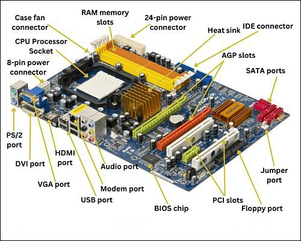
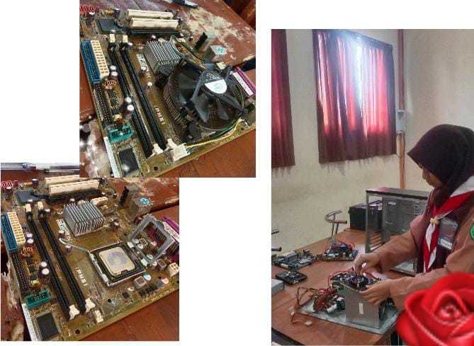
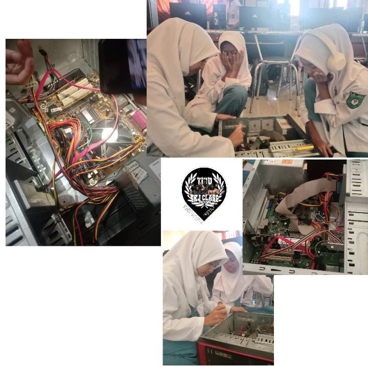

Komponen-Komponen Motherboard
••> Pernah nggak sih kamu berpikir, apa yang membuat komputer bisa nyala dan bekerja dengan baik?? Jawabannya ada di satu komponen utama yang menjadi pusat segala aktivitas komputer: Motherboard! Tanpa motherboard, komputer hanyalah tumpukan logam dan plastik.
✓ Kalian tahu nggak di SMKN 10 MALANG ini, kita nggak cuma belajar secara teori, tapi kita akan langsung praktek merakit komputer dari awal! Motherboard adalah bagian pertama yang harus kamu pahami jika ingin menguasai dunia komputer. Ini adalah komponen yang menghubungkan semua bagian penting dalam komputer, mulai dari prosesor, RAM, hard disk, hingga kartu grafis. Bisa dibilang, motherboard adalah “otak” yang menyatukan tubuh komputer!
Kenalan dengan Komponen-Komponen Penting Motherboard:
- Socket Prosesor: Ini adalah tempat di mana CPU (Central Processing Unit) dipasang. Bisa dibilang, prosesor adalah otak dari komputer, dan motherboard adalah rumahnya.
- Slot RAM: Memori RAM (Random Access Memory) adalah speed booster buat komputer kamu. Semakin banyak RAM, semakin cepat komputer kamu bisa bekerja! Di slot RAM inilah tempat kamu bisa menambah kekuatan pada komputer, layaknya memberi daya tambahan agar bisa lari lebih cepat.
- Port SATA: SATA adalah jalan raya untuk menyambungkan perangkat penyimpanan seperti hard drive (HDD) atau solid-state drive (SSD). Tanpa port SATA yang baik, komputer kamu bisa lemot, kayak mobil mogok di jalan tol!
- Chipset: Ini adalah komponen yang bertugas sebagai pengatur lalu lintas data antara CPU, RAM, dan berbagai perangkat lainnya. Bisa dibilang, chipset adalah “manager” yang mengatur semua operasi di motherboard, memastikan semuanya berjalan dengan lancar tanpa ada hambatan.
Di kelas ini, kamu akan belajar bagaimana cara menyusun dan menghubungkan komponen-komponen tersebut satu per satu. Mulai dari menyiapkan casing komputer, memasang motherboard, hingga merakit dan menghubungkan komponen lainnya seperti hard drive, kartu grafis, dan kabel power.
Dan yang paling seru, setelah semua komponen terpasang dengan benar, kamu akan menyalakan komputer pertama yang kamu rakit sendiri!
Kenapa Kamu Harus Mempelajari Ini?
- Keterampilan yang Berguna: Kita bisa menghemat biaya perbaikan dan bahkan merakit komputer sendiri sesuai kebutuhan. Ini merupakan kemampuan untuk menguasai teknologi dari dasar.
- Peluang Karier: Dengan memahami motherboard dan cara merakit komputer, kamu bisa mengejar karier yang banyak dicari di industri teknologi. Bukan cuma belajar, ini adalah investasi masa depan!
- Kontrol Penuh atas Komputermu: Membangun komputer sendiri memberi kamu kendali penuh atas performa, desain, dan bahkan anggaran yang kamu keluarkan.
✓ Ini adalah keterampilan dasar yang akan membantumu lebih mengerti bagaimana teknologi bekerja dan membuka banyak pintu peluang di masa depan.
Siapa tahu, kamu akan menemukan passion dan karier baru di dunia perakitan komputer yang penuh tantangan!
✓ Praktikum efektif di jurusan TKJ (Teknik Komputer dan Jaringan) SMKN 10 MALANG
Dokumentasi Praktik Siswa

